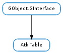

| Subclasses: | Atk.NoOpObject |
|---|
| add_column_selection(column) | |
| add_row_selection(row) | |
| get_caption() | |
| get_column_at_index(index_) | |
| get_column_description(column) | |
| get_column_extent_at(row, column) | |
| get_column_header(column) | |
| get_index_at(row, column) | |
| get_n_columns() | |
| get_n_rows() | |
| get_row_at_index(index_) | |
| get_row_description(row) | |
| get_row_extent_at(row, column) | |
| get_row_header(row) | |
| get_selected_columns(selected) | |
| get_selected_rows(selected) | |
| get_summary() | |
| is_column_selected(column) | |
| is_row_selected(row) | |
| is_selected(row, column) | |
| ref_at(row, column) | |
| remove_column_selection(column) | |
| remove_row_selection(row) | |
| set_caption(caption) | |
| set_column_description(column, description) | |
| set_column_header(column, header) | |
| set_row_description(row, description) | |
| set_row_header(row, header) | |
| set_summary(accessible) |
None
| Name | Parameters | Return | Description |
|---|---|---|---|
| column-deleted | int, int | The “column-deleted” signal is emitted by an object which implements the Atk.Table interface when a column is deleted. | |
| column-inserted | int, int | The “column-inserted” signal is emitted by an object which implements the Atk.Table interface when a column is inserted. | |
| column-reordered | The “column-reordered” signal is emitted by an object which implements the Atk.Table interface when the columns are reordered. | ||
| model-changed | The “model-changed” signal is emitted by an object which implements the Atk.Table interface when the model displayed by the table changes. | ||
| row-deleted | int, int | The “row-deleted” signal is emitted by an object which implements the Atk.Table interface when a row is deleted. | |
| row-inserted | int, int | The “row-inserted” signal is emitted by an object which implements the Atk.Table interface when a row is inserted. | |
| row-reordered | The “row-reordered” signal is emitted by an object which implements the Atk.Table interface when the rows are reordered. |
Bases: GObject.GInterface
Atk.Table should be implemented by components which present elements ordered via rows and columns. It may also be used to present tree-structured information if the nodes of the trees can be said to contain multiple “columns”. Individual elements of an Atk.Table are typically referred to as “cells”, and these cells are exposed by Atk.Table as child Atk.Objects of the Atk.Table. Both row/column and child-index-based access to these children is provided.
Children of Atk.Table are frequently “lightweight” objects, that is, they may not have backing widgets in the host UI toolkit. They are therefore often transient. Since tables are often very complex, Atk.Table includes provision for offering simplified summary information, as well as row and column headers and captions. Headers and captions are Atk.Objects which may implement other interfaces (Atk.Text, Atk.Image, etc.) as appropriate. Atk.Table summaries may themselves be (simplified) Atk.Tables, etc.
| Parameters: | column (int) – a int representing a column in table |
|---|---|
| Returns: | a bool representing if the column was successfully added to the selection, or 0 if value does not implement this interface. |
| Return type: | bool |
Adds the specified column to the selection.
| Parameters: | row (int) – a int representing a row in table |
|---|---|
| Returns: | a bool representing if row was successfully added to selection, or 0 if value does not implement this interface. |
| Return type: | bool |
Adds the specified row to the selection.
| Returns: | a Atk.Object representing the table caption, or None if value does not implement this interface. |
|---|---|
| Return type: | Atk.Object |
Gets the caption for the table.
| Parameters: | index_ (int) – a int representing an index in table |
|---|---|
| Returns: | a int representing the column at the specified index, or -1 if the table does not implement this interface |
| Return type: | int |
Gets a int representing the column at the specified index_.
| Parameters: | column (int) – a int representing a column in table |
|---|---|
| Returns: | a str representing the column description, or None if value does not implement this interface. |
| Return type: | str |
Gets the description text of the specified column in the table
| Parameters: | |
|---|---|
| Returns: | a int representing the column extent at specified position, or 0 if value does not implement this interface. |
| Return type: |
Gets the number of columns occupied by the accessible object at the specified row and column in the table.
| Parameters: | column (int) – a int representing a column in the table |
|---|---|
| Returns: | a Atk.Object representing the specified column header, or None if value does not implement this interface. |
| Return type: | Atk.Object |
Gets the column header of a specified column in an accessible table.
| Parameters: | |
|---|---|
| Returns: | a int representing the index at specified position. The value -1 is returned if the object at row,column is not a child of table or table does not implement this interface. |
| Return type: |
Gets a int representing the index at the specified row and column.
| Returns: | a int representing the number of columns, or 0 if value does not implement this interface. |
|---|---|
| Return type: | int |
Gets the number of columns in the table.
| Returns: | a int representing the number of rows, or 0 if value does not implement this interface. |
|---|---|
| Return type: | int |
Gets the number of rows in the table.
| Parameters: | index_ (int) – a int representing an index in table |
|---|---|
| Returns: | a int representing the row at the specified index, or -1 if the table does not implement this interface |
| Return type: | int |
Gets a int representing the row at the specified index_.
| Parameters: | row (int) – a int representing a row in table |
|---|---|
| Returns: | a str representing the row description, or None if value does not implement this interface. |
| Return type: | str |
Gets the description text of the specified row in the table
| Parameters: | |
|---|---|
| Returns: | a int representing the row extent at specified position, or 0 if value does not implement this interface. |
| Return type: |
Gets the number of rows occupied by the accessible object at a specified row and column in the table.
| Parameters: | row (int) – a int representing a row in the table |
|---|---|
| Returns: | a Atk.Object representing the specified row header, or None if value does not implement this interface. |
| Return type: | Atk.Object |
Gets the row header of a specified row in an accessible table.
| Parameters: | selected (int) – a int that is to contain the selected columns numbers |
|---|---|
| Returns: | a int representing the number of selected columns, or %0 if value does not implement this interface. |
| Return type: | int |
Gets the selected columns of the table by initializing **selected with the selected column numbers. This array should be freed by the caller.
| Parameters: | selected (int) – a int that is to contain the selected row numbers |
|---|---|
| Returns: | a int representing the number of selected rows, or zero if value does not implement this interface. |
| Return type: | int |
Gets the selected rows of the table by initializing **selected with the selected row numbers. This array should be freed by the caller.
| Returns: | a Atk.Object representing a summary description of the table, or zero if value does not implement this interface. |
|---|---|
| Return type: | Atk.Object |
Gets the summary description of the table.
| Parameters: | column (int) – a int representing a column in table |
|---|---|
| Returns: | a bool representing if the column is selected, or 0 if value does not implement this interface. |
| Return type: | bool |
Gets a boolean value indicating whether the specified column is selected
| Parameters: | row (int) – a int representing a row in table |
|---|---|
| Returns: | a bool representing if the row is selected, or 0 if value does not implement this interface. |
| Return type: | bool |
Gets a boolean value indicating whether the specified row is selected
| Parameters: | |
|---|---|
| Returns: | a bool representing if the cell is selected, or 0 if value does not implement this interface. |
| Return type: |
Gets a boolean value indicating whether the accessible object at the specified row and column is selected
| Parameters: | |
|---|---|
| Returns: | a Atk.Object representing the referred to accessible |
| Return type: |
Get a reference to the table cell at row, column.
| Parameters: | column (int) – a int representing a column in table |
|---|---|
| Returns: | a bool representing if the column was successfully removed from the selection, or 0 if value does not implement this interface. |
| Return type: | bool |
Adds the specified column to the selection.
| Parameters: | row (int) – a int representing a row in table |
|---|---|
| Returns: | a bool representing if the row was successfully removed from the selection, or 0 if value does not implement this interface. |
| Return type: | bool |
Removes the specified row from the selection.
| Parameters: | caption (Atk.Object) – a Atk.Object representing the caption to set for table |
|---|
Sets the caption for the table.
| Parameters: |
|---|
Sets the description text for the specified column of the table.
| Parameters: |
|
|---|
Sets the specified column header to header.
| Parameters: |
|---|
Sets the description text for the specified row of table.
| Parameters: |
|
|---|
Sets the specified row header to header.
| Parameters: | accessible (Atk.Object) – an Atk.Object representing the summary description to set for table |
|---|
Sets the summary description of the table.